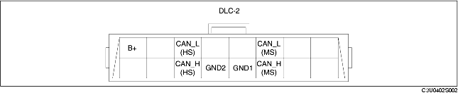

• A connector (DLC-2) conforming to International Organization for Standardization (ISO) standards has been adopted.
• Shape and terminal arrangement as stipulated by the ISO 15031-3 (SAE J1962) international standard has been adopted for this connector. The connector has a 16-pin construction that includes the CAN_H (HS), CAN_L (HS), CAN_H (MS), CAN_L (MS), GND1, GND2 and B+ terminals.
